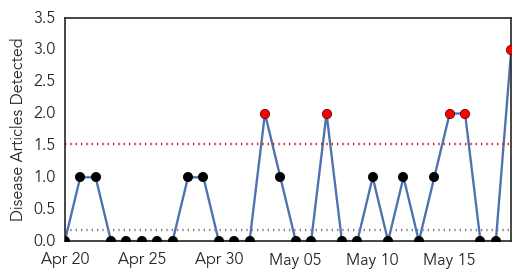
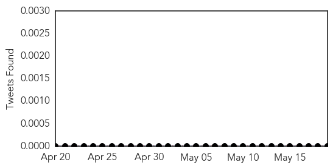
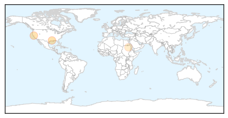
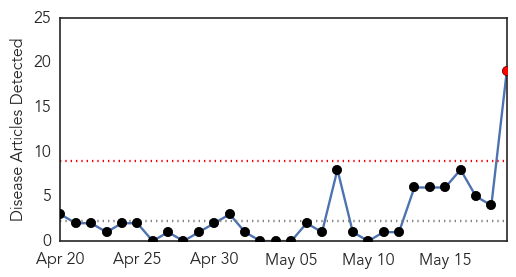
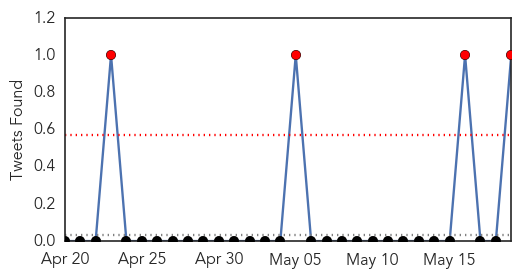
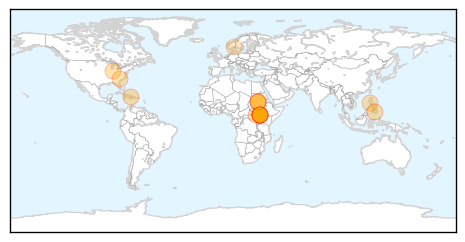
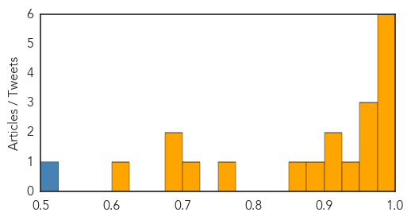

West Nile Virus
30-Day Web Trend
5 alerts, 0 warnings

30-Day Twitter Trend
0 alerts, 0 warnings

Article Locations
Article Confidences

Top Articles:
Top Tweets:
-
No tweets found for May 19, 2014
Cholera
30-Day Web Trend
1 alerts, 0 warnings

30-Day Twitter Trend
1 alerts, 0 warnings

Article Locations
Article Confidences
Top Articles:
- 0.998
- Nine Dead from Cholera in War-Torn South Sudan — Naharnet
- 0.996
- Cholera outbreak in war-torn South Sudan
- 0.989
- Cholera cases rapidly multiplying in South Sudan
- 0.988
- U.N. cites cholera outbreak in South Sudan as evidence of government failure
- 0.985
- Open defecation eyed in N. Cotabato cholera cases
- 0.985
- Cholera kills 7 soldiers in Upper Nile
- 0.974
- Chikungunya, cholera and other diseases in Haiti: An ‘on the ground’ perspective with Haitian Hearts, Dr. John Carroll
- 0.958
- Nine dead in cholera outbreak in South Sudan capital
- 0.951
- Nine dead in cholera outbreak in South Sudan capital - WHO
- 0.935
- South Sudan: South Sudan on cholera alert as donors meet to pledge funds
- 0.921
- South Sudan on cholera alert as donors meet to pledge funds
- 0.915
- South Sudan on cholera alert as donors meet to pledge funds - South Sudan
- 0.878
- Over 1,000 suffer from diarrhea in N. Cotabato
- 0.869
- Nine dead in cholera outbreak in South Sudan capital - WHO
- 0.762
- UNICEF demands action to save South Sudanese children
- 0.711
- Sudan Vision Daily
- 0.684
- UNICEF Urges Action To Save South Sudan's Children
- 0.678
- Demands For Action To Save Children Of South Sudan From 'Living Nightmare'
- 0.603
- saudi Press agency
Top Tweets:
- 0.515
- Herd protection with vaccines is so cool vaccineswork pneumonia cholera rotavirus advac